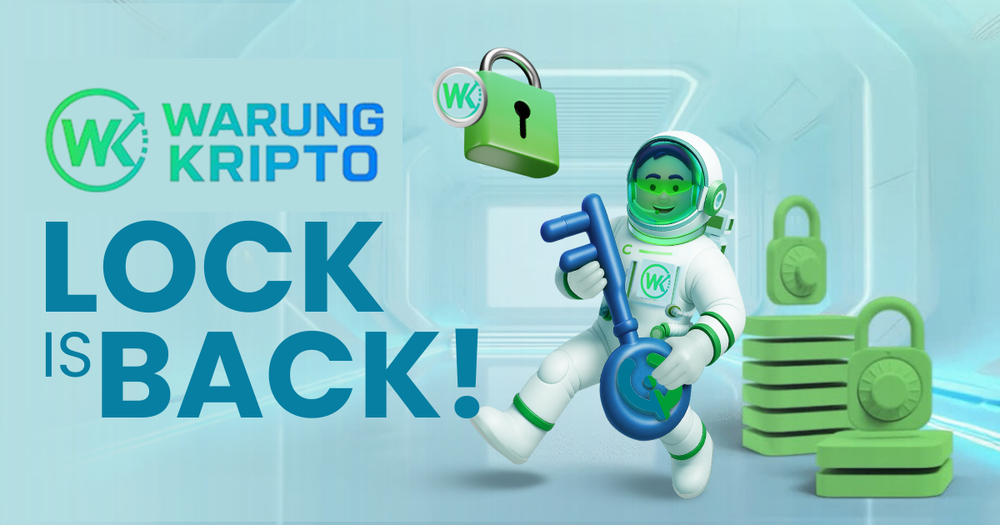

A. FOMO dan Panik Jual

Salah satu kesalahan paling umum yang dilakukan pemula adalah FOMO (Fear of Missing Out) — ketakutan ketinggalan momen harga naik. Akibatnya, banyak investor membeli di puncak harga tanpa riset, lalu menjual panik ketika harga turun. Pola ini berulang dan membuat kerugian besar.
Cara menghindarinya adalah dengan memiliki rencana investasi jangka panjang dan memahami bahwa volatilitas adalah hal wajar dalam pasar crypto. Belajar membaca tren dan gunakan strategi seperti dollar cost averaging agar keputusan investasi tidak emosional.
B. Menyimpan Aset di Exchange Tanpa Proteksi

Menyimpan aset dalam jangka panjang di exchange (bursa) sangat berisiko karena pengguna tidak memiliki kendali atas private key. Jika exchange diretas atau ditutup, aset bisa hilang selamanya. Prinsip dasar dalam dunia crypto: “Not your keys, not your coins.”
Gunakan wallet pribadi (software atau hardware) untuk penyimpanan jangka panjang. Aktifkan fitur keamanan seperti 2FA (Two-Factor Authentication) dan hindari menggunakan password yang sama di banyak platform.
C. Tidak Paham Konsep Private Key
Private key adalah kunci utama untuk mengakses aset crypto Anda. Jika hilang atau jatuh ke tangan orang lain, aset bisa dicuri tanpa bisa dikembalikan. Sayangnya, banyak pemula tidak menyadari pentingnya menjaga private key dengan aman.
Simpan private key dan seed phrase di tempat aman dan offline, misalnya di media fisik seperti kertas atau perangkat khusus. Jangan pernah membagikannya kepada siapa pun, termasuk situs atau orang yang mengaku dari “dukungan pelanggan”.
D. Percaya pada Janji Profit Instan
Banyak penipuan di dunia crypto menggunakan iming-iming profit cepat dan tinggi. Skema seperti ini biasanya berbentuk ponzi atau rug pull di mana investor awal dibayar menggunakan uang investor baru. Ketika arus dana berhenti, proyek runtuh dan dana hilang.
Ingatlah bahwa tidak ada investasi yang menjanjikan keuntungan pasti. Selalu lakukan riset mendalam, hindari proyek tanpa transparansi, dan jangan mudah tergoda oleh janji “cuan kilat”.
E. Tidak Belajar Sebelum Berinvestasi

Banyak pemula langsung membeli crypto tanpa memahami dasar teknologi dan risiko yang ada. Padahal, edukasi adalah kunci utama agar tidak salah langkah. Dengan memahami konsep dasar seperti blockchain, wallet, dan keamanan, seseorang bisa membuat keputusan yang lebih bijak.
Sebelum berinvestasi, bacalah buku, artikel, dan sumber tepercaya. Ikuti komunitas edukatif dan hindari sumber yang hanya menonjolkan keuntungan tanpa menjelaskan risiko. Belajar lebih dahulu berarti melindungi aset sendiri dari kesalahan fatal.